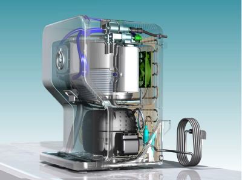
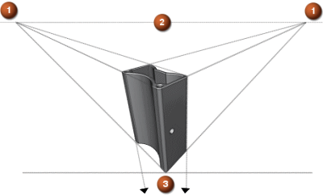
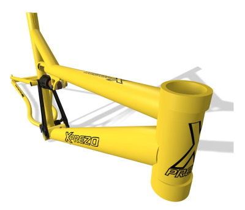
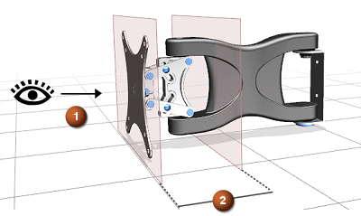

组建场景时，您可以指定透视以创建真实生动的场景。

NX 将使用三点透视，您可以动态调整与目标之间的距离。
当图像平面与场景三个轴中任意轴都不平行时，就存在三点透视，三个消隐点与场景中的三个轴对应。
除了基于图像顶部和底部的两个消隐点之外，还存在第三个基于侧面边交点的消隐点。
|
 |
|
投影缩减是对象由于视角原因而导致显示比实际短小的视觉效果。
投影缩减是透视的基本类型，透视常用在与某个对象或部分对象的关系中，而不是与场景或对象组。

景深是场景中的距离范围，在距离内的对象显示在焦点中，而超出景深的对象则显示在焦点外。
|
 |
|
使用景深以把观察者的注意力集中在场景中的特定对象上。